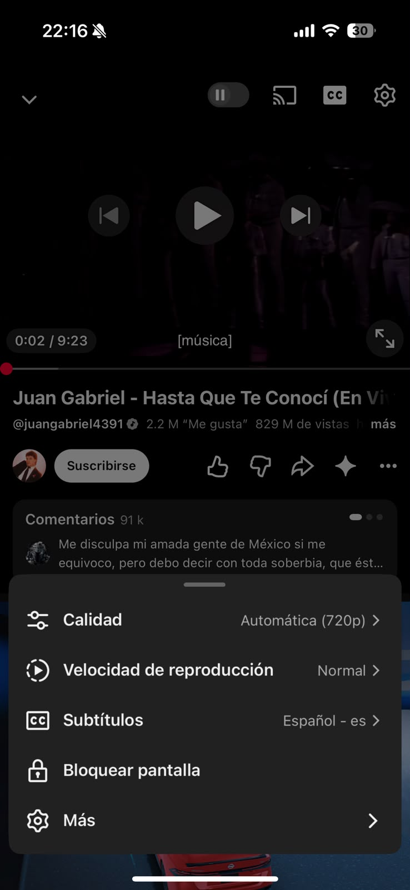
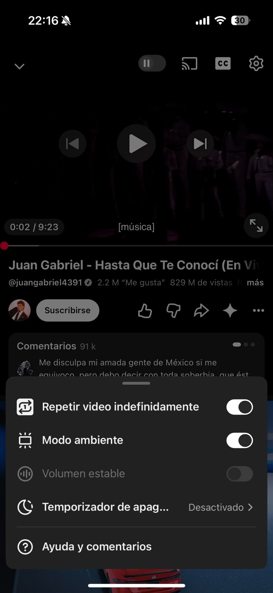
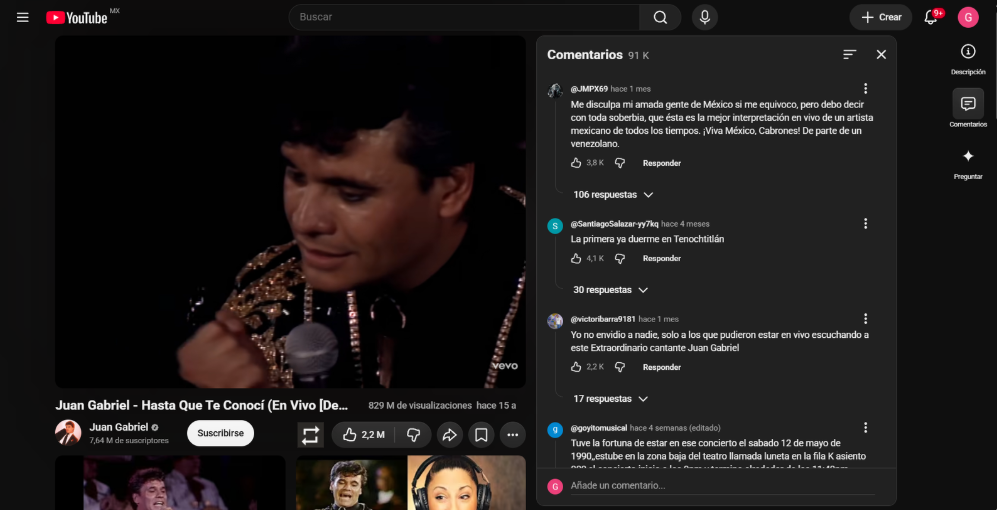

Redesigning YouTube’s Loop Feature & Video Interface
Georgina García Martínez - A00843898
Application: YouTube (Mobile / Desktop)
Selected Feature: Video Loop Control & Playback Interface Organization
Task Description: Enabling continuous loop playback for specific content (such as study music, white noise, ambient sounds, or 10-hour extended tracks) while interacting with the video interface.
Currently, activating the repeat video option requires navigating through hidden settings menus:


The redesigned proposal introduces a dedicated Loop Button (🔁)
New User Flow (Reduced to 1 Step):
1. Tap the direct Loop Icon in the player overlay to instantly toggle repeat mode on/off.

• Clarity & Efficiency: Reducing the user journey from 4 steps to 1 direct click eliminates friction and improves task completion speed.
• Visual Hierarchy: Elevating the loop button to primary controls aligns with user intent when interacting with audio/repetitive video content.
• Instant Visual Feedback: An active state indicator (highlighted icon/color change) gives clear feedback without extra menu navigation.
• Consistent Design System: The new button matches YouTube's iconography and visual language seamlessly.